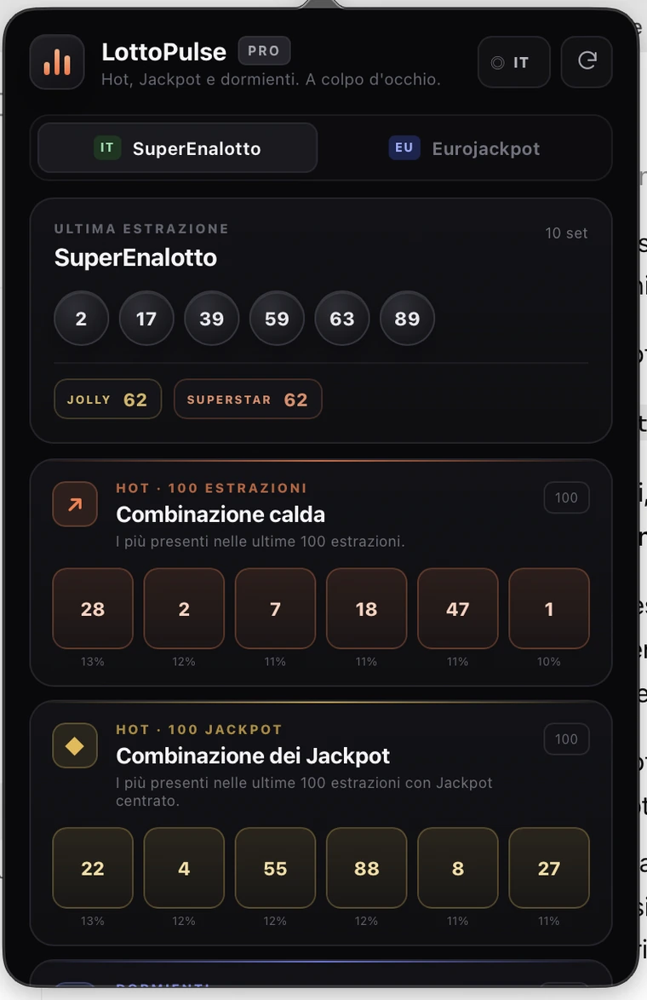

Hot · ultime 100 estrazioni
Mostra i numeri più frequenti nelle ultime 100 estrazioni, con la relativa percentuale di presenza.
Hot 100, Jackpot 100 e numeri dormienti per SuperEnalotto ed EuroJackpot, raccolti in un popup semplice e veloce.

Apri il popup, scegli il gioco e trovi subito ciò che ti interessa.
Mostra i numeri più frequenti nelle ultime 100 estrazioni, con la relativa percentuale di presenza.
Considera solo i concorsi in cui il Jackpot è stato centrato e mostra i numeri più ricorrenti.
Evidenzia i numeri assenti da più concorsi nella finestra delle ultime 100 estrazioni.
Niente dashboard infinite, niente account, niente notifiche invadenti.
LottoPulse scarica dati pubblici, li elabora localmente e conserva una cache sul dispositivo per essere rapido anche al riavvio.
L'interfaccia è disponibile in italiano, inglese, tedesco, spagnolo e francese. La lingua viene rilevata automaticamente e può essere cambiata dal popup.
Un unico pagamento. Nessun rinnovo automatico, nessun piano mensile e nessun account da ricordare.
No. Mostra statistiche descrittive basate su estrazioni passate. Le estrazioni sono eventi casuali e i dati storici non aumentano la probabilità di vincita.
No. L'estensione funziona senza account LottoPulse. La lingua e la cache dei dati vengono salvate localmente sul dispositivo.
Sì. LottoPulse recupera periodicamente le fonti pubbliche e mantiene l'ultima cache valida se una fonte è temporaneamente irraggiungibile.
No. LottoPulse è uno strumento statistico indipendente e non è affiliato con gli operatori delle lotterie o con ADM.